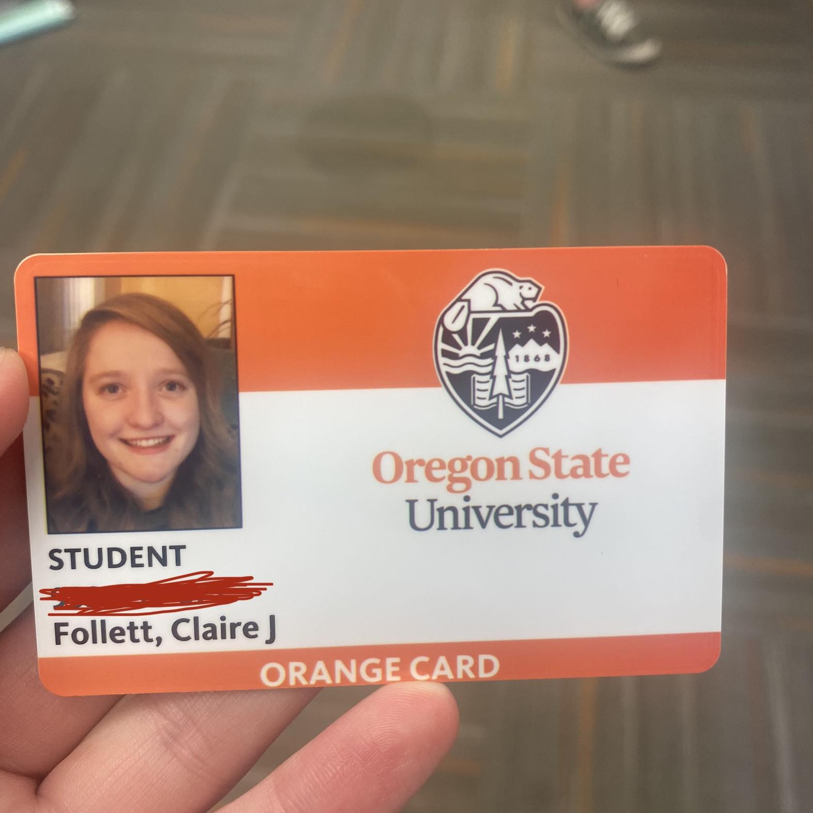

Assignment Number One

Claire Follett
Majorng in Computer Science
A couple of credits shy of being in my third year!
- What is the most complex or interesting thing you've done with your current web development skills?
- The most interesting thing I've done with my current web development skills was probably when I
worked as a Web Developer for a software company in Opal. This was in 2017-2018. I worked there for
about a year before I moved to the Coast. It was a super fun job, I maintained the website and managed
a lot of the marketing such as creating automated emails and creating demos on our website. I also made
a blog for marketing related blog posts. Prior to that, I went to a coding boot camp to learn JavaScript.
- What do you hope to learn from this class?
- I'm hoping to touch up on my JavaScript skills, mainly with NodeJS
- Have you signed up for our course Campuswire forum?